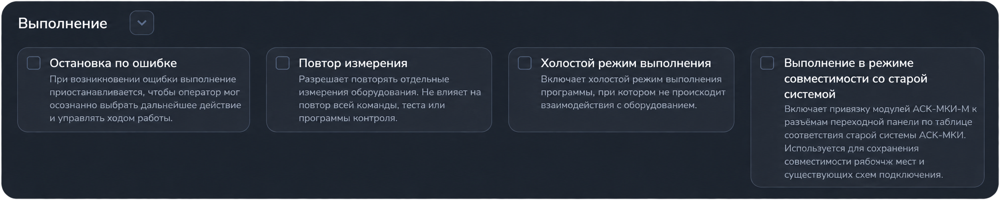

Настройки выполнения
Раздел «Настройки → Выполнение» задаёт поведение программы контроля, тестов и измерений. Он находится во вкладке «Параметры». Раскройте его стрелкой рядом с заголовком.

Основные параметры
| Параметр | Что изменяет |
|---|---|
| Остановка по ошибке | При обнаружении ошибки приостанавливает выполнение, чтобы оператор мог выбрать дальнейшее действие. В программе контроля ошибки команды обрабатываются после её выполнения. Доступные действия зависят от ошибки и состояния исполнителя. |
| Повтор измерения | Разрешает повтор отдельных измерений оборудования. Не задаёт автоматический повтор всей команды, теста или программы контроля. |
| Холостой режим выполнения | Переводит выполнение на предусмотренные приложением имитации вместо работы с физическим оборудованием. Используется для знакомства с выполнением и проверки сценариев. |
| Выполнение в режиме совместимости со старой системой | Использует таблицу соответствия между точками модулей АСК-МКИ-М и разъёмами переходной панели старой системы. Режим предназначен для сохранения существующих схем подключения рабочего места. |
Режим совместимости не запускает старую программу. Для отдельного запуска через неё предусмотрена команда «Выполнение АСК-МКИ(OLD)».
Сохранение и отмена
- Измените необходимые переключатели.
- Рядом с заголовком появятся действия подтверждения и отмены изменений.
- Нажмите значок подтверждения, чтобы сохранить параметры.
Крестик отменяет несохранённые изменения и возвращает последние сохранённые значения. Это не сброс к заводским настройкам.
«Остановку при ошибке» и «Повтор измерения» можно также изменить через шестерёнку в окне выполнения программы контроля до запуска или на паузе. Сохранённые значения синхронизируются с общими настройками.
Особенности холостого режима
Переключатель холостого режима доступен при выключенном питании системы. При включённом питании он скрыт. Выберите режим до включения аппаратуры.
При включении холостого режима появляется блок «Выполнение с ошибками»: он позволяет проверить реакцию исполнителя на искусственные ошибки.
- Симуляция ошибок измерений: «Без ошибок», «Случайно», «Ниже нормы» или «Выше нормы». Выбор задаёт направление ошибочного результата относительно допустимого диапазона.
- Симуляция сбоев оборудования: выберите устройства, для которых нужно имитировать ошибки измерительных команд. Список формируется из конфигурации оборудования.
На скриншоте холостой режим выключен, поэтому дополнительный блок не показан.
Результаты холостого выполнения не подтверждают проверку физического изделия. Выключенная «Остановка по ошибке» не гарантирует продолжения при любой неисправности: отсутствие ответа оборудования и ошибки, препятствующие выполнению, обрабатываются отдельно.
Пошаговое выполнение
Отдельного переключателя пошагового запуска в этом разделе нет. Используйте Ctrl+F10 для запуска по командам или Ctrl+F11 для запуска с заходом во внутренние действия. Подробности — в статье «Режимы выполнения и пошаговый запуск».